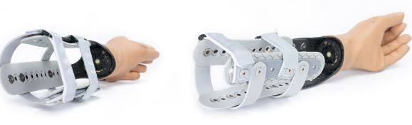
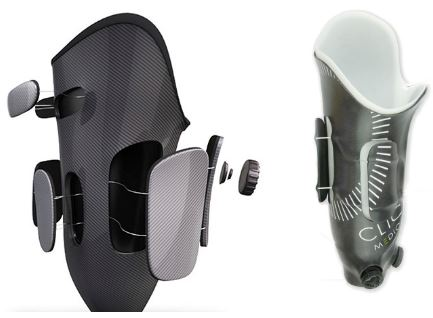
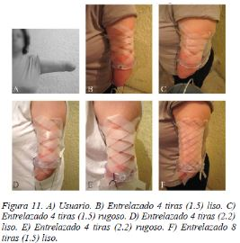

INTRODUCCIÓN
Hasta la actualidad, la industria protésica se ha enfocado en reemplazar la extremidad para recuperar la función y/o la apariencia de estar completo; sin embargo, han desatendido los efectos colaterales causados por su uso. Como consecuencia del uso diario del socket se acumulan en ella sustancias de desecho como puede ser sudor, células muertas, polvo o suciedad que pueden provocar malos olores y proliferación de bacterias y hongos, esto podría conllevar a enfermedades como micosis,, sarpullido por calor, ampollas, dermatitis de contacto, abrasiones y pelos encarnados dolorosos evidenciados en el transcurso del tiempo[3][4][7]. Entre las propuestas actuales de socket tenemos:
Micosis es un tipo de infección común en usuarios de prótesis, producidas por distintos grupos de hongos patógenos para el hombre que invaden las estructuras queratinizadas, en los niveles superficial, subcutáneo y profundos o sistémicos de la piel [3], ya que el contacto entre el muñón y el socket genera un ambiente oscuro, húmedo y cálido, apto para la proliferación de hongos.
-SOCKET-LESS SOCKETPosee un transradial transformado, el cual se puede envolver alrededor de la extremidad y microajustarse de la extremidad para brindar un comodidad óptima,el zócalo más ligero y más fresco, su marco abierto permite una buena dispersión de calor.[6]
 -RVOFITEs un socket ajustable que se adapta a la necesidades de las tallas cambiantes diarias del muños de los usuarios, están compuestos por paneles que son graduados manualmente por medio de un sistema de cierre BOA, una perilla que permite al usuario modificar la presión y el ajuste del socket. Su encaje interno blando en Thermolyn suprasoft asegura al usuario un mayor confort, ya que su flexibilidad permite crear presión en diferentes zonas de los amputados transfemorales. La versión moderna están imbuidas con iones de plata, los cuales ejercen un efecto antibacteriano sobre el miembro residual del usuario.[5]
 -SUSPENSIÓN DE SOCKET MEDIANTE MALLASSe basa en el mecanismo artesanal de atrapadedos. El sistema está conformado por un entrelazado de tiras de material plástico que recubren el miembro residual.
En el presente proyecto se expondrá el proceso de evaluación de estas tres propuestas de solución para un socket de ajuste mecánico que permita la ventilación correcta del miembro residual, respetando parámetros importantes, tales como las propiedades antimicóticas del material a usar, el coeficiente de fricción y resistencia a las cargas. Posteriormente, se seleccionará la propuesta más viable luego de evaluar la funcionalidad del dispositivo durante su uso, para continuar con el desarrollo del diseño, fabricación y prueba de esta.